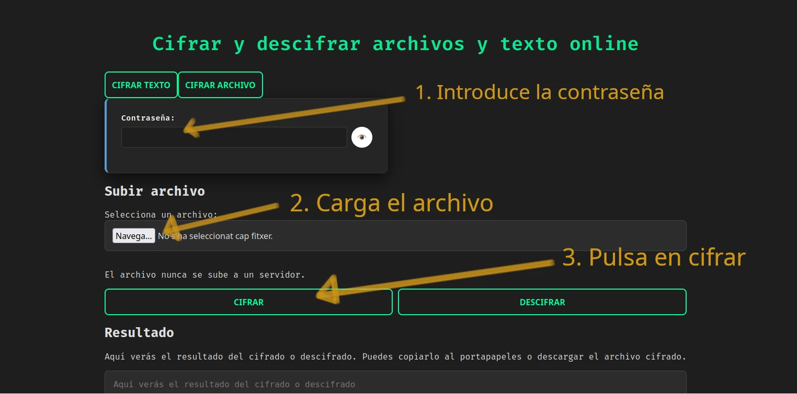
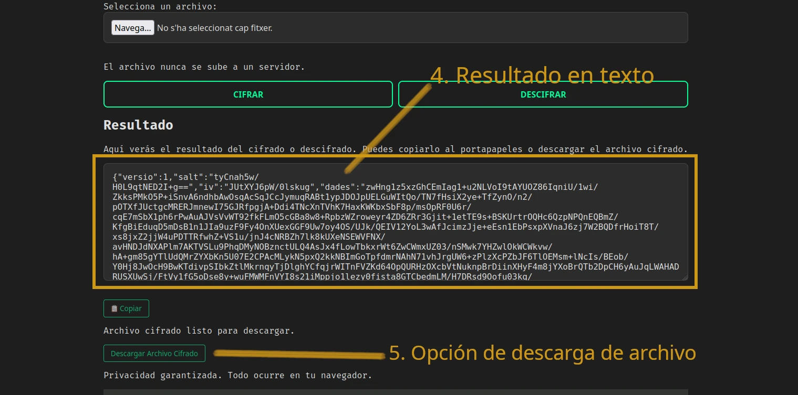

¿Qué significa cifrar archivos online?
Cifrar archivos online consiste en transformar un documento legible (por ejemplo, un PDF o un DOCX) en un archivo ilegible mediante un algoritmo de encriptación y una clave. Solo quien tenga la clave correcta podrá descifrarlo y recuperar el contenido original.
La diferencia clave de esta herramienta es que todo el cifrado de archivos se realiza localmente en tu navegador. Los documentos que seleccionas nunca se suben a servidores externos.
Cómo cifrar archivos online paso a paso
A continuación tienes una guía rápida para cifrar archivos usando la aplicación web:
- Abre la herramienta: abrir cifrador de archivos.
- Selecciona la opción de cifrar archivos dentro de la aplicación.
- Elige el archivo que quieres cifrar (por ejemplo, un PDF, DOCX, TXT u ODT).
- Introduce una clave de cifrado segura que solo tú y la persona destinataria conozcáis. Conoce nuestras recomendaciones para una contraseña fuerte
- Haz clic en el botón de cifrar para generar el archivo cifrado.
-
Descarga el archivo cifrado en formato
.enc.jsony guárdalo donde prefieras.
Más adelante, cuando quieras recuperar el contenido original, podrás
cargar el archivo .enc.json en la misma herramienta,
introducir la misma clave y pulsar descifrar.


Ejemplo de interfaz para cifrar archivos online en el navegador.
¿Qué tipos de archivos puedes cifrar?
La herramienta está pensada para cifrar principalmente archivos de texto y documentos, como:
- Archivos de texto plano TXT.
- Documentos PDF.
- Documentos de Word DOCX.
- Documentos de texto ODT.
El resultado es un archivo cifrado en formato
.enc.json, que contiene los datos encriptados y la
información necesaria para poder descifrarlos posteriormente con la
misma herramienta.
Ventajas de cifrar archivos online en el navegador
- Privacidad total: los archivos no se suben a servidores.
- Sin instalación: funciona directamente en el navegador.
- Ideal para documentos sensibles: contratos, informes, notas privadas, etc.
- Control de la clave: tú decides cómo compartir la clave de cifrado.
🔐 ¿Qué algoritmo se usa para cifrar los archivos?
Los archivos se cifran con AES-GCM, un algoritmo de cifrado moderno y seguro ampliamente utilizado en navegadores, aplicaciones de mensajería y sistemas de almacenamiento.
El cifrado se realiza mediante la WebCrypto API, la API nativa de seguridad del navegador. Esto significa que:
- Todo el proceso de cifrado y descifrado ocurre localmente en tu dispositivo.
- Los archivos no se envían a servidores externos.
- La clave de cifrado nunca abandona tu navegador.
La clave se deriva a partir de tu contraseña mediante funciones criptográficas seguras, lo que añade una capa adicional de protección frente a ataques de fuerza bruta.
Buenas prácticas al cifrar archivos online
Aunque la herramienta realiza el cifrado de forma local, es importante seguir algunas buenas prácticas de seguridad:
- Usa una clave de cifrado robusta, difícil de adivinar.
- No compartas la clave por el mismo canal donde envías el archivo cifrado.
- Evita cifrar archivos en dispositivos o redes que no sean de confianza.
- Haz copias de seguridad de los archivos cifrados si son muy importantes.
Aprende más sobre las contraseñas:
Crear contraseñas seguras
Aprende sobre la entropia de contraseñas
¿Es mi contraseña segura?
Preguntas frecuentes sobre cifrar archivos online
¿Se suben mis archivos a algún servidor al cifrarlos?
No. En esta herramienta, todo el proceso de cifrado y descifrado de archivos se realiza en tu navegador mediante la WebCrypto API. Los documentos no se envían ni se almacenan en servidores externos.
¿Qué pasa si pierdo la clave de cifrado?
Si pierdes la clave de cifrado, no podrás recuperar el contenido del archivo. Por seguridad, la herramienta no guarda ni puede recuperar tu clave. Es importante que la almacenes en un lugar seguro.
¿Puedo usarlo para archivos muy sensibles?
Sí, siempre que combines el uso de la herramienta con buenas prácticas de seguridad: clave robusta, dispositivo de confianza y canales seguros para compartir la clave.
¿Necesito instalar algo?
No. Solo necesitas un navegador moderno. La herramienta funciona directamente desde la web, sin instalaciones ni extensiones.
¿Puedo cifrar textos sensibles también?
Si quieres cifrar texto, visita nuestra guía en cifrar textos online.
Cifrar archivos online ahora
Si quieres empezar a cifrar archivos online de forma segura, puedes usar la herramienta gratuita disponible en este proyecto:
Abrir herramienta para cifrar archivosTambién puedes:
- Visitar la página principal del cifrador para ver todas las funciones.
- Consultar la guía para cifrar texto online si solo necesitas trabajar con texto.